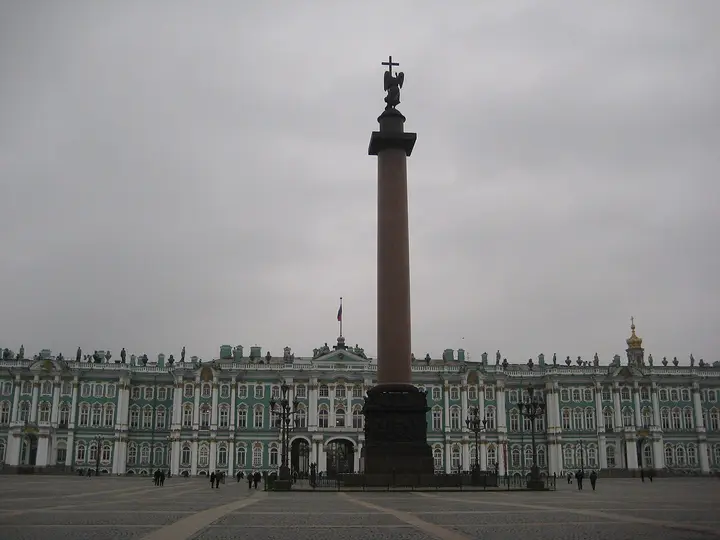
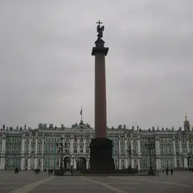

Фото: Наталья Филатова, CC BY 3.0 · Wikimedia Commons
Площадь · Центр
Дворцовая площадь
Главная площадь города: Зимний дворец, арка Главного штаба и Александровская колонна; вечерняя подсветка — отдельное удовольствие.
- ₽ · до 1 500 ₽ на человека
- Новое в каталоге
- в 1 плане
Позвать сюда: Дворцовая площадьОткрыть в каталоге: Дворцовая площадьМаршрут до места: Дворцовая площадь
Адрес и детали
- Адрес
- Дворцовая пл.
Открыть на Яндекс Картах (в новой вкладке) - Метро
- м. Адмиралтейская
- Район
- Центр
- Цена
- до 1 500 ₽ на человека
- Проверено
- работает — проверили в октябре 2026
Планы с этим местом 1

- Дворцовая площадь · Площадь · м. Адмиралтейская
- 9 минут пешкомЧАО Какао · Какаочная
Арка Главного штаба и Александровская колонна в вечерней подсветке, а потом 9 минут пешком — густой горячий шоколад из окошка какаочной.
Открыть план: Дворцовая и горячий шоколадПозвать сюда: Дворцовая и горячий шоколад
Фото: Наталья Филатова, CC BY 3.0 · Wikimedia Commons
Входит в подборки
Похожие рядом

Что ещё рядом
Как позвать
- Выбери план, место или событие — в карточке адрес, цены и маршрут в Яндекс Картах.
- Нажми «Позвать сюда» — соберётся приглашение-игра для свидания или голосование для компании.
- Отправь ссылку в любой мессенджер: тебе ответят, а компания отметит, куда и когда может. Бесплатно и без регистрации.